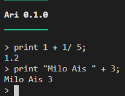
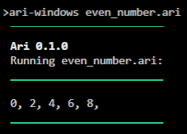

Overview
Make Ari come alive¶
-
Once Ari is downloaded, either:
-
double-click the file
or
-
open a command line in the same folder and enter
ari-windowsor./ari-linux
-
-
Ari's interface should look like this
1 2 3 4 5
‾‾‾‾‾‾‾‾‾ Ari 0.1.0 _________ >
Interpreter mode¶
- The above interface is called the interpreter mode or more commonly known as REPL.
-
Experiment with Ari by typing in Ari-compatible syntax:

Run a program¶
- For most practical purposes, it is better to write an Ari program in a separate file.
- For example, if the file's name is called
even_numbers.ari, open the command line and enterari-windows even_numbers.arior./ari-linux even_numbers.ari
-
Below is a sample code for
even_numbers.ariand the result:1 2 3
for(let i = 0; i < 10; i = i + 2) { print i + ", "; }

Values¶
- Values are Ari's bread and butter:
1 2 3 4 5 6
1; // Number "Good mourning"; // String true; // Boolean null; // Null [1, 2, 3]; // Array of Numbers ["abc", "def"]; // Array of Strings - Logical comparisons are also essential.
- Check out the other sections for more info.
Semicolon¶
- Never forget to add semicolons behind each statement. I know it is annoying, but consider it a mental discipline, like house chores.
1 2 3
1 + 2; 50 + 70 // Missing semicolon! 19 + 21;
Whitespace¶
- Ari doesn't care about whitespace. How much spacing to use is up to you:
1 2 3 4 5 6 7
3; 2; 2; 3; 4; 1;1; 4; 5; 5; 6; 6; 7;7; "I love whitespace";
Comments¶
- Everyone loves to gossip, so comment to your heart's content by adding double slashes,
//:1 2 3
"Shoplifters will be prostituted"; // Note to self: Change this misspelling in one year's time when I review this code again. // Just kidding.
Variables¶
- The
letkeyword indicates the declaration of a new variable. - Variable names can only contain numbers, alphabets, and the underscore
_. Also, names cannot begin with a number.1 2 3 4
let a = 1; a = 2; a = 3 + a; // 5 let 3musketeers = 3; // Error because variable name starts with a number
Reserved keywords
class,super, andthisare reserved for a future version of Ari which includes classes, so they are forbidden.
- Block scoping and shadowing are extremely important concepts that are relevant in other languages.
Displaying output¶
-
printdisplays something in the command line:1 2 3 4
let a = 10; print "Item no. "; print a; // Output: Item no. 10 -
printlnadds a newline at the end of the output:1 2 3 4 5
let a = 10; println "Item no. "; println a; // Output: Item no. // 10
If-Else¶
- The typical
if-elsetrope:1 2 3 4 5 6 7
let a = "apple"; if (a == "banana") { println "banana"; } else { println a; // This gets printed }
Loops¶
-
While loops repeat as long the condition is true:
1 2 3 4 5 6 7 8
let a = 3; while(a > 0) { println a; a = a - 1; } // 3 // 2 // 1 -
For loops simplify counter-like loops:
1 2 3 4 5 6
for(let a = 3; a > 0; a = a- 1) { println a; } // 3 // 2 // 1
Exiting the program prematurely¶
baiquits the program and prints a given value:1 2 3 4 5 6 7 8 9 10
for(let a = 3; a > 0; a = a- 1) { println a; if(a == 2) { bai "i'm sick of loops."; } } // 3 // 2 // I'm sick of loops // Program ends
Arrays¶
- Arrays must contain the same type of elements.
-
Indexes start from 0.
1 2 3 4 5
let a = [1, 2, 3]; // Array of Numbers let b = ["x", "y"]; // Array of Strings a[1] = 5; println a; // [1, 5, 3] a[2] = b[1]; // Error because different types -
Arithmetic for arrays of Numbers are straightforward:
1 2 3 4
let a = [1, 2, 3]; let b = [10, 20, 30]; println a + b; // [11, 22, 33] println a * b; // [10, 40, 90] -
map, filter and reduce are especially useful for quick array transformations.
Functions¶
-
Functions enable code reusability:
1 2 3 4 5
fn is_greater(input) { return input > 5; } println is_greater(1); // false println is_greater(6); // true -
Functions are first class citizens. What does this mean?
- Closure is another important concept to grasp and is relevant to other languages.
Built-in Functions¶
- Built-in functions are useful for executing common operations without reinventing the wheel.
-
Other functions include:
More Examples¶
- Go here